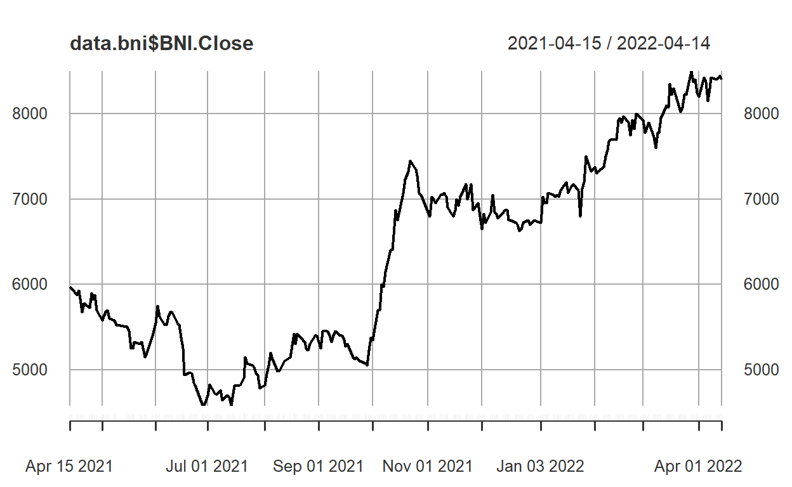
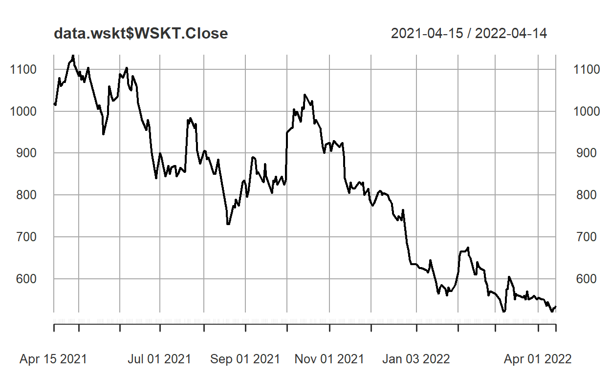
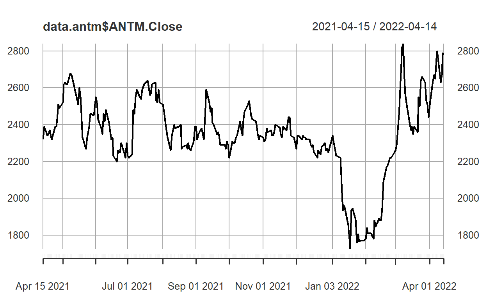
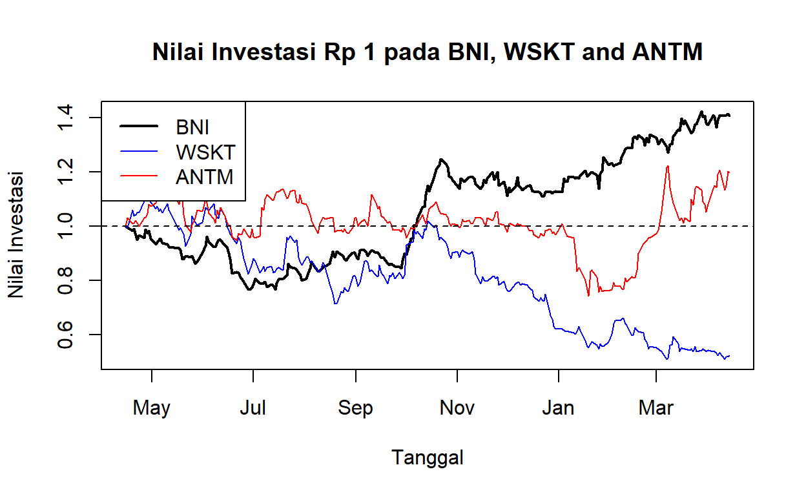

Modul 3 EKSI4203
Modul ini membahas secara rinci dua faktor utama dalam mengambil keputusan investasi yaitu return dan risiko. Berbagai jenis return dan risk serta cara penghitungannya juga dibahas di modul ini.
Setelah mempelajari dengan baik modul ini Anda diharapkan mampu menghitung return dan risiko untuk aset tunggal dan portofolio dan konsep diversifikasi. Secara khusus Anda diharapkan mampu:
A. RETURN ASET TUNGGAL
\[R_t = \frac {P_t - P_{(t-1)}} {P_{(t-1)}} + \frac {I_t}{P_{(t-1)}} \] Catatan:
Relatif return: hasil investasi \((P_t)\) relatif tehrdap nilai investasinya \((P_{t-1})\)
\[Relatif \,Return_t = \frac {P_t}{P_{t-1}} \] Jika dividen diperhitungkan menjadi:
\[Relatif \,Return_t = \frac {P_t}{P_{t-1}} + \frac {D_t}{P_{t-1}} \]
\[\begin{align*} E(R_i) & = \frac {R_1 + R_2 + R_3 + ...+ R_n} {n}\\ E(R_i) & = \frac {\sum_{x = 1}^{n} R_i}{n} \end{align*}\]
Keterangan:
B. RISIKO ASET TUNGGAL
\[ SD = \sigma = \sqrt \frac {{{\sum_{x = 1}^{n} [R_t} - {E(R)}}]^2} {n-1} \]
Keterangan:
C. KOEFISIEN VARIASI
\[CV_i = \frac {Risiko}{Return\,Ekspektasian}\] Keterangan:
A. TUJUAN MEMBUAT PORTOFOLIO
B. RETURN PORTOFOLIO
1. Portofolio berisi 2 Aset
Return Realisasian
\[ Rp = w_1 . R_1 + w_2 . R_2 \]
Keterangan:
Return Ekspektasian
\[ E (Rp) = w_1.E(R_1) + w_2 . E(R_2)\]
Keterangan:
2. Portofolio berisi banyak Aset
RETURN REALISASIAN
\[ Rp = w_1 . R_1 + w_2 . R_2 + w_3 . R_3 +...+ w_n .R_n \]
atau dapat dituliskan sebagai:
\[ Rp = {\sum_{x = 1}^{n} {(w_i.R_i)}}\]
Keterangan:
RETURN EKSPEKTASIAN
\[\begin{align*} E(Rp) & = w_1 . E(R_1) + w_2 . E(R_2) + w_3 . E(R_3) +...+ w_n .E(R_n)\\ E(Rp) & = {\sum_{x = 1}^{n} {(w_i.E(R_i)}} \end{align*}\]
Keterangan:
C. RISIKO PORTOFOLIO
\[\sigma_p^2 = w_1^2 \sigma_1^2+ w_2^2 \sigma_2^2+ w_1w_2 \sigma_{12}+w_2w_1 \sigma_{21}\] karena \(\sigma_{12}\) simetris dengan \(\sigma_{21}\) yang nilainya sama, maka rumus menjadi:
\[ \sigma_p^2 = w_1^2 \sigma_1^2+ w_2^2 \sigma_2^2+ 2 w_1w_2 \sigma _{12}\] Rumus ini dapat dikembangkan untuk portofolio dengan n-aset:
\[ \sigma_p^2 = [w_1^2 \sigma_1^2+ w_2^2 \sigma_2^2 + ...+ w_n^2 \sigma_n^2 ]+ [2 w_1w_2 \sigma _{12} + 2 w_1w_3 \sigma _{13}...+ 2 w_{n-1}w_n \sigma _{{n-1},n}]\] Dua komponen Risiko Portofolio
Varian: semua varian dari aset-aset di dalam portofolio
\[ VAR = \sigma^2 = SD^2 = \frac {\sum_{n=1}^{n} [R_t -E(R)]^2} {n-1} \] Kovarian: arah pergerakan dua buah variabel
\[ Cov (R_A,R_B) = \sigma_{A,B} = \frac {{\sum_{n=1}^{n} [R_{A,t} - E(R_A)] [R_{B,t} -E(R_B)]}} {n-1} \]
D. DIVERSIFIKASI RISIKO PORTOFOLIO
Dengan menggunakan komputer kita tidak perlu lagi menghitung secara manual return, risiko, SD, Var, Cov dll. Berikut sebagai ilustrasi bagaimana membandingkan kinerja beberapa saham dengan menggunakan software R. Data harga saham harian diunduh dari Yahoo Finance. Saham yang akan dibandingkan adalah saham BNI, PT Waskita Karya, dan PT Aneka Tambang.
BNI.Open BNI.High BNI.Low BNI.Close BNI.Volume
2021-04-15 5950 6025 5900 5975 17975900
2021-04-16 6025 6050 5875 5950 17665900
2021-04-19 5900 5975 5825 5875 11917800
2021-04-20 5875 5925 5800 5925 8272500
2021-04-21 5875 5875 5750 5775 13227700
2021-04-22 5800 5825 5650 5675 28608300
BNI.Adjusted
2021-04-15 5866.750
2021-04-16 5842.202
2021-04-19 5768.561
2021-04-20 5817.655
2021-04-21 5670.373
2021-04-22 5572.185 BNI.Open BNI.High BNI.Low BNI.Close BNI.Volume
2022-04-07 8150 8300 8075 8300 26910300
2022-04-08 8325 8450 8250 8425 41911800
2022-04-11 8500 8500 8350 8400 35747700
2022-04-12 8400 8475 8275 8425 27774600
2022-04-13 8525 8525 8375 8450 28560500
2022-04-14 8450 8500 8350 8400 17990600
BNI.Adjusted
2022-04-07 8300
2022-04-08 8425
2022-04-11 8400
2022-04-12 8425
2022-04-13 8450
2022-04-14 8400[1] "BNI.Open" "BNI.High" "BNI.Low" "BNI.Close"
[5] "BNI.Volume" "BNI.Adjusted"
Index BNI.Close
Min. :2021-04-15 Min. :4580
1st Qu.:2021-07-18 1st Qu.:5325
Median :2021-10-16 Median :6662
Mean :2021-10-16 Mean :6359
3rd Qu.:2022-01-13 3rd Qu.:7156
Max. :2022-04-14 Max. :8500 WSKT.Open WSKT.High WSKT.Low WSKT.Close WSKT.Volume
2021-04-15 1035 1065 1020 1020 43199300
2021-04-16 1030 1045 1015 1015 27119500
2021-04-19 1020 1090 1020 1080 88913100
2021-04-20 1080 1085 1050 1060 34441200
2021-04-21 1060 1080 1035 1065 26142900
2021-04-22 1080 1090 1050 1070 28027300
WSKT.Adjusted
2021-04-15 1020
2021-04-16 1015
2021-04-19 1080
2021-04-20 1060
2021-04-21 1065
2021-04-22 1070 WSKT.Open WSKT.High WSKT.Low WSKT.Close WSKT.Volume
2022-04-07 545 545 535 535 18894600
2022-04-08 535 545 530 545 28163900
2022-04-11 545 545 515 520 46212800
2022-04-12 520 535 520 530 25672200
2022-04-13 535 540 525 530 18395300
2022-04-14 535 540 520 535 34015800
WSKT.Adjusted
2022-04-07 535
2022-04-08 545
2022-04-11 520
2022-04-12 530
2022-04-13 530
2022-04-14 535[1] "WSKT.Open" "WSKT.High" "WSKT.Low" "WSKT.Close"
[5] "WSKT.Volume" "WSKT.Adjusted"
Index WSKT.Close
Min. :2021-04-15 Min. : 520
1st Qu.:2021-07-18 1st Qu.: 635
Median :2021-10-16 Median : 835
Mean :2021-10-16 Mean : 815
3rd Qu.:2022-01-13 3rd Qu.: 960
Max. :2022-04-14 Max. :1135 ANTM.Open ANTM.High ANTM.Low ANTM.Close ANTM.Volume
2021-04-15 2340 2350 2300 2320 109175800
2021-04-16 2340 2420 2310 2390 173387400
2021-04-19 2350 2370 2300 2340 91552300
2021-04-20 2330 2360 2300 2350 60372200
2021-04-21 2320 2400 2300 2370 112742900
2021-04-22 2380 2440 2350 2350 119644900
ANTM.Adjusted
2021-04-15 2303.26
2021-04-16 2390.00
2021-04-19 2340.00
2021-04-20 2350.00
2021-04-21 2370.00
2021-04-22 2350.00 ANTM.Open ANTM.High ANTM.Low ANTM.Close ANTM.Volume
2022-04-07 2670 2820 2660 2760 286617900
2022-04-08 2790 2820 2740 2800 189362100
2022-04-11 2800 2810 2630 2630 163864600
2022-04-12 2620 2680 2580 2670 88390900
2022-04-13 2690 2800 2670 2790 143822800
2022-04-14 2790 2870 2750 2780 201698200
ANTM.Adjusted
2022-04-07 2760
2022-04-08 2800
2022-04-11 2630
2022-04-12 2670
2022-04-13 2790
2022-04-14 2780[1] "ANTM.Open" "ANTM.High" "ANTM.Low" "ANTM.Close"
[5] "ANTM.Volume" "ANTM.Adjusted"
Index ANTM.Close
Min. :2021-04-15 Min. :1725
1st Qu.:2021-07-18 1st Qu.:2270
Median :2021-10-16 Median :2350
Mean :2021-10-16 Mean :2344
3rd Qu.:2022-01-13 3rd Qu.:2470
Max. :2022-04-14 Max. :2840 BNI WSKT ANTM
2021-04-15 5975 1020 2320
2021-04-16 5950 1015 2390
2021-04-19 5875 1080 2340
2021-04-20 5925 1060 2350
2021-04-21 5775 1065 2370
2021-04-22 5675 1070 2350[1] 5975[1] 1020[1] 2320 BNI WSKT ANTM
2021-04-15 1.0000000 1.000000 1.000000
2021-04-16 0.9958159 0.995098 1.030172
2021-04-19 0.9832636 1.058824 1.008621
2021-04-20 0.9916318 1.039216 1.012931
2021-04-21 0.9665272 1.044118 1.021552
2021-04-22 0.9497908 1.049020 1.012931[1] 0.5098039 1.4225941
BNI.Close
2021-04-15 5975
2021-04-16 5950
2021-04-19 5875
2021-04-20 5925
2021-04-21 5775
2021-04-22 5675 BNI.Close
2022-04-07 8300
2022-04-08 8425
2022-04-11 8400
2022-04-12 8425
2022-04-13 8450
2022-04-14 8400 price lag.price
2021-04-15 5975 NA
2021-04-16 5950 5975
2021-04-19 5875 5950
2021-04-20 5925 5875
2021-04-21 5775 5925
2021-04-22 5675 5775 price lag.price
2022-04-07 8300 8150
2022-04-08 8425 8300
2022-04-11 8400 8425
2022-04-12 8425 8400
2022-04-13 8450 8425
2022-04-14 8400 8450 price lag.price price.ret
2021-04-15 5975 NA NA
2021-04-16 5950 5975 -0.004184100
2021-04-19 5875 5950 -0.012605042
2021-04-20 5925 5875 0.008510638
2021-04-21 5775 5925 -0.025316456
2021-04-22 5675 5775 -0.017316017 price lag.price price.ret
2022-04-07 8300 8150 0.018404908
2022-04-08 8425 8300 0.015060241
2022-04-11 8400 8425 -0.002967359
2022-04-12 8425 8400 0.002976190
2022-04-13 8450 8425 0.002967359
2022-04-14 8400 8450 -0.005917160 price.ret
2021-04-16 -0.004184100
2021-04-19 -0.012605042
2021-04-20 0.008510638
2021-04-21 -0.025316456
2021-04-22 -0.017316017
2021-04-23 0.017621145 price.ret
2022-04-07 0.018404908
2022-04-08 0.015060241
2022-04-11 -0.002967359
2022-04-12 0.002976190
2022-04-13 0.002967359
2022-04-14 -0.005917160 price.ret
nobs 247.000000
NAs 0.000000
Minimum -0.059048
Maximum 0.065421
1. Quartile -0.010695
3. Quartile 0.013963
Mean 0.001566
Median 0.000000
Sum 0.386872
SE Mean 0.001234
LCL Mean -0.000864
UCL Mean 0.003997
Variance 0.000376
Stdev 0.019392
Skewness 0.358968
Kurtosis 0.404076